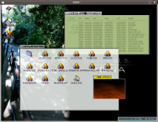

Mona OS is new, small, simple and well structured.
So, Mona OS may be suitable for education of Operating System and program at school.
Oct 9, 2006
Mona OS ver.0.3.0alpha8 (Download).
- simple web browser
- VFS support
- switch to Subversion
- support build on Linux with Mingw
- enhanced libc support
- APM support
- GUI selector on boot
Aug 6, 2006
File Server on Linux version 0.0.1 Released (Download).
- Full emulation of Mona Message and Shared Memory API.
- VFS support.
- New file server compares favorably with old file server.
Apr 25, 2006
We have moved to sf.net and start to use Subversion.